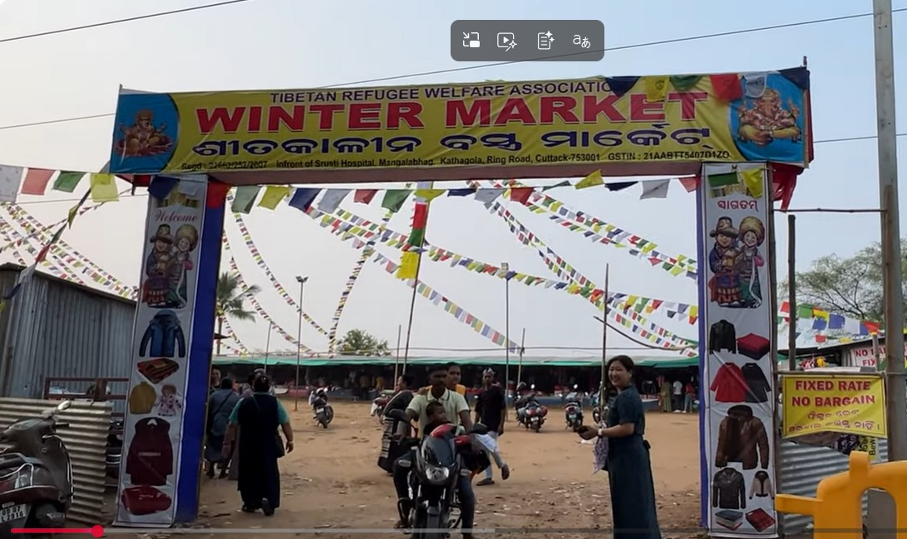

Real Story · 中文
第一天真正开出印度，是 407 公里。
06/11/2023，我从 Kolkata 开去 Cuttack，大概 407 km。 因为当时我有 M&S tyre 的 sponsor，所以每天都会 WhatsApp mileage 给 agent。 那一天，是 India 段真正开始后的第一段长距离记录。
到了 Cuttack，我去了一个 Winter Market。 我先问了那里的 shopkeeper，能不能让我 overnight 停在那里。 对我来说，那不是普通停车点，而是当天路程结束后，一个可以安全停靠的地方。
在那里，我遇到了一些 Tibetan refugee。她们很惊讶我一个人开 campervan， 从 Malaysia 一路来到 India。其中一位英文说得很好，于是我们开始聊天。 后来，我也拍了一支关于他们 business 和 community story 的 YouTube video， 采访了他们的 head。
我来自 Malaysia，生活在一个相对和平的地方。 很多时候，我最大的问题，是钱不够，不能买更好的东西。 可是那一天，我开了 407 km 来到 Cuttack，听见的是一个社群六十年的 refugee life。
Mr. Tenzen 说起他们的 grandparents，当年离开 Tibet，走过动荡的过去， 后来在 India 重新生活。他也说起 Indian government 对他们的帮助， 让他们能够在这里建立新的生活。
但听到最后，我记住的不是“他们卖什么”，也不是“这个 market 有多大”。 我记住的是，他们心里还有一个非常深的愿望： 有一天，可以回到那个他们一直放在心里的家。
English Memory Summary
A road beginning became a conversation about home.
On 06/11/2023, Tuzi drove about 407 km from Kolkata to Cuttack. Because of her M&S tyre sponsorship, she reported her daily mileage to the agent through WhatsApp. This became one of the earliest road records of the India segment.
At the Cuttack Winter Market, Tuzi asked for permission to park overnight. There, she met members of the Tibetan refugee community. They were surprised that she was driving solo, and one of them spoke English well enough to help bridge the conversation.
Tuzi later created a YouTube video about their business and interviewed Mr. Tenzen, who spoke about his grandparents’ journey from Tibet, decades of refugee life, gratitude toward the support they received in India, and their enduring hope of returning home one day.
For Tuzi, this meeting changed the scale of her own problems. Coming from Malaysia, many of her worries were about not having enough money to buy valuable things. But in Cuttack, she listened to a story about people who carried a homeland in their hearts for sixty years.
Related Video
From Tibet to India: A Resilient Journey of Hope and Heritage
Tuzi created this video after meeting the Tibetan refugee community at the Cuttack Winter Market. The video preserves their business, their voice, and their hope of one day returning home.
Heart Statement
那一天，我突然觉得自己的烦恼变小了。
我从 Malaysia 来，生活在一个和平的地方。 很多时候，我烦的是钱不够，不能买想买的东西。
可是那一天，我在 Cuttack 听见一个社群六十年的流亡故事。 我才知道，有些人的愿望不是拥有更多东西。
他们的愿望，是有一天可以回到心里的家。
Some people do not dream of owning more things. They dream of returning to the home they still carry in their hearts.